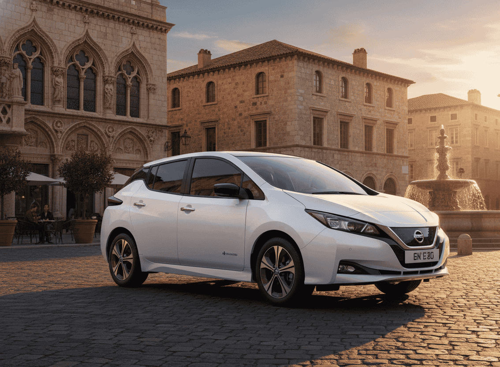
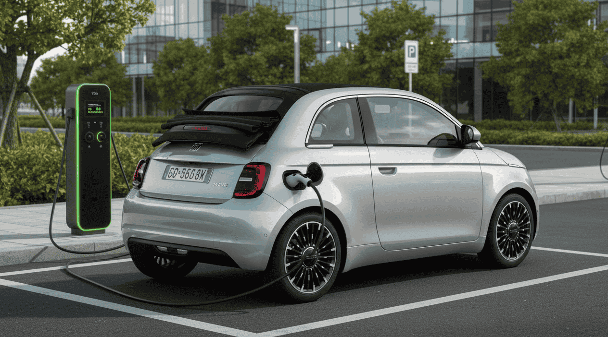

Por qué ahora es buen momento para comprar un eléctrico de ocasión
El número de coches eléctricos matriculados en España ha crecido de forma exponencial desde 2019. Eso significa que, en 2026, hay una oferta de vehículos de ocasión mucho más amplia y variada que hace apenas dos o tres años. Modelos que en su momento eran difíciles de encontrar de segunda mano, como el Hyundai Kona Eléctrico o el BMW i3, ahora aparecen con regularidad en los principales portales de compraventa.
A esto se suma una caída generalizada de precios. La llegada masiva de modelos nuevos chinos y europeos de bajo coste —con precios de salida que rondan los 15.000-20.000€— ha presionado a la baja las valoraciones de los eléctricos de segunda mano, generando oportunidades reales para el comprador. Según datos del portal Coches.net y Autocasion, los precios medios de los eléctricos de ocasión en España han descendido entre un 10% y un 18% en los últimos doce meses.
El resultado es que, con un presupuesto de 20.000€ o menos, ya es posible acceder a coches con garantías, buenas baterías y autonomías perfectamente válidas para el uso diario. Lo importante es saber cuáles son y qué mirar antes de comprar.
1. Renault Zoe: el rey indiscutible del mercado de ocasión
Renault Zoe · Desde 7.800€ (2016) hasta 20.990€ (2023)
El Zoe es, con diferencia, el eléctrico de segunda mano más fácil de encontrar en España. Su popularidad durante años como el más vendido de su segmento ha generado una oferta amplísima en el mercado de ocasión, y eso se refleja en los precios: es posible encontrar unidades de 2016 desde aproximadamente 7.800€, aunque con autonomías limitadas (en torno a 150-180 km reales). Las versiones más interesantes son las de 2020 en adelante, con la batería de 52 kWh y una autonomía WLTP de 395 km, que se pueden encontrar entre 14.000€ y 20.990€ según el año y los kilómetros.
- Batería: 22 kWh (2016-2018), 41 kWh (2018-2019), 52 kWh (2020+)
- Autonomía WLTP: hasta 395 km (versión Z.E.50)
- Carga: hasta 50 kW DC (versiones recientes)
- Atención: verificar si la batería está en propiedad o en alquiler (ver más abajo)
⚠️ La cuestión de la batería en el Zoe
Los modelos anteriores a 2020 se comercializaron frecuentemente con la batería en régimen de alquiler a Renault, con cuotas mensuales de entre 49€ y 119€ según el contrato y los kilómetros anuales. Este coste puede alterar completamente el análisis económico de la compra. Desde 2020, Renault empezó a ofrecer versiones con batería incluida. Es el primer dato que hay que comprobar antes de hacer ninguna oferta.
2. BMW i3: calidad premium a precio de ocasión
BMW i3 · Desde 13.990€ hasta 19.900€
El BMW i3 es uno de esos coches que el paso del tiempo ha convertido en una ganga. Diseñado con materiales de altísima calidad —carrocería de fibra de carbono (CFRP), interior con madera reciclada y cuero ecológico—, en su día era un vehículo de más de 35.000€. Hoy, unidades de 2019-2022 con la versión de mayor autonomía (batería de 42,2 kWh, conocida como i3 120Ah) se encuentran en el rango de 13.990€ a 19.900€.
- Batería: 42,2 kWh (versión 120Ah, desde 2018)
- Autonomía WLTP: hasta 310 km
- Potencia: 170 CV
- Carga rápida DC CCS: hasta 50 kW
- Producción finalizada en 2022, lo que asegura buena disponibilidad de recambios en la red oficial

El BMW i3 es la puerta de entrada al universo premium eléctrico en el mercado de ocasión, con unidades desde 13.990€
Es un coche con una personalidad muy particular —puertas traseras en contrapuerta, sin marco de ventana— que encanta o deja indiferente. Pero en términos de calidad de construcción y experiencia de conducción, ningún rival en este rango de precio se le acerca. Para uso urbano e interurbano es una opción francamente difícil de batir.
3. Nissan Leaf: el veterano con el mayor historial de fiabilidad
Nissan Leaf · Desde 6.500€ (2016) hasta cerca de 20.000€ (2022-2023)
El Nissan Leaf fue el primer eléctrico de gran consumo del mundo y sigue siendo uno de los más sólidos del mercado de ocasión. Su trayectoria arranca en 2011, lo que significa que hay ejemplares muy asequibles en la franja más baja del presupuesto, aunque con autonomías reducidas. Las versiones más interesantes son las de segunda generación (a partir de 2018), con batería de 40 kWh y autonomía WLTP de 270 km, que se pueden encontrar en el entorno de 12.000-18.000€. La versión Leaf e+ con 62 kWh puede superar los 20.000€, aunque con cierta negociación es posible acercarse al límite.
- Batería: 24 kWh (gen 1), 40 kWh o 62 kWh (gen 2)
- Autonomía WLTP: hasta 385 km (e+)
- Sin carga rápida DC en versiones básicas de primera generación
- CHAdeMO (no CCS), lo que limita la red compatible en Europa

El Nissan Leaf tiene el historial de fiabilidad más contrastado de todos los eléctricos de ocasión disponibles en España
Un punto a tener en cuenta: las versiones más antiguas del Leaf no tienen gestión térmica activa de la batería, lo que puede acelerar la degradación en climas cálidos como el español. Solicitar siempre el informe de salud de la batería (SoH) es especialmente importante en este modelo.
4. Hyundai Kona Eléctrico: la opción más equilibrada del segmento
Hyundai Kona Eléctrico · Entre 17.000€ y 20.000€ (2019-2020)
Si el criterio principal es la autonomía real, el Hyundai Kona Eléctrico de primera generación (64 kWh) es difícilmente superable en este rango de precio. Con más de 400 km WLTP y una autonomía real de entre 320 y 360 km en condiciones normales, es un coche perfectamente válido para viajes largos sin sufrir ansiedad por la recarga. Las unidades de 2019-2020 se mueven habitualmente entre 17.000€ y 20.000€, dependiendo del kilometraje y el equipamiento.
- Batería: 64 kWh (versión larga autonomía) o 39,2 kWh
- Autonomía WLTP: hasta 449 km (64 kWh)
- Potencia: 204 CV (64 kWh)
- Carga rápida DC CCS: hasta 100 kW (versiones 2019+)
- Gestión térmica activa de la batería (refrigeración líquida)
El Kona tiene gestión térmica activa —refrigeración líquida de la batería—, lo que es una garantía de menor degradación a lo largo del tiempo. Es, probablemente, la opción más inteligente dentro de este presupuesto si se necesita autonomía real para uso mixto urbano e interurbano.
5. Fiat 500e: el urbano con más estilo del mercado
Fiat 500e · Precio medio ~14.000€ (2022-2023); rango desde 11.850€
El Fiat 500e de nueva generación (lanzado en 2020) está comenzando a llegar con fuerza al mercado de segunda mano español, especialmente unidades de 2022 y 2023 procedentes de renting y leasing corporativo. Su precio medio ronda los 14.000€ para unidades con kilometraje razonable, aunque hay opciones por debajo de los 12.000€. Es un coche fundamentalmente urbano: su batería de 42 kWh ofrece unos 240-270 km WLTP (150-180 km reales en uso intensivo urbano), pero su maniobrabilidad y diseño lo hacen especialmente atractivo para ciudad.
- Batería: 42 kWh (versión estándar) o 23,8 kWh (versión Action, coupé)
- Autonomía WLTP: hasta 320 km (42 kWh)
- Potencia: 118 CV
- Carga rápida DC: hasta 85 kW

El Fiat 500e es el eléctrico urbano con más personalidad del mercado de ocasión y ya aparece con regularidad por debajo de los 14.000€
6. Volkswagen e-Golf: la lógica Golf, 100% eléctrica
Volkswagen e-Golf · Entre 15.000€ y 18.000€ (2019-2020)
Para quien quiere la practicidad y la reputación del Golf —maletero generoso, acabados sólidos, dinámica conocida— pero en versión completamente eléctrica, el e-Golf es la respuesta. Aunque Volkswagen dejó de producirlo en 2020 para apostar por la plataforma MEB con el ID.3, las unidades de 2019-2020 siguen siendo una opción muy sensata. Su batería de 35,8 kWh ofrece unos 200 km de autonomía real, suficiente para la mayoría de usos cotidianos. Los precios de estas últimas versiones se mueven en el rango de 15.000€ a 18.000€.
- Batería: 35,8 kWh
- Autonomía WLTP: 231 km (autonomía real ~190-210 km)
- Potencia: 136 CV
- Carga rápida DC CCS: hasta 40 kW
- Fabricación finalizada en 2020
Su principal limitación es la velocidad de carga rápida (máximo 40 kW DC), algo que puede hacerse notar en viajes largos. Para uso diario urbano o periurbano con carga en casa, sin embargo, es un compañero fiable y muy bien construido.
Los nuevos que compiten de frente con el mercado de ocasión
En 2026, el mercado de coches eléctricos nuevos de bajo coste ya no es una promesa, es una realidad que presiona directamente sobre los precios de los usados. Antes de decidirte por un eléctrico de segunda mano, merece la pena conocer estas alternativas:
🔋 Nuevos eléctricos que rivalizan con el mercado de ocasión:
- Renault Twingo E-Tech Eléctrico: Con las ayudas del Plan Auto+ y las promociones de lanzamiento, su precio puede bajar hasta los 12.970€ para beneficiarios. Sin ayudas, parte de aproximadamente 19.000€. Es el eléctrico urbano nuevo más asequible del mercado europeo en este momento. (Fuente: Renault España, mayo 2026)
- Dacia Spring: La entrada más económica al mundo del eléctrico nuevo, con precios de partida por debajo de los 15.000€ con ayudas. Ideal para uso estrictamente urbano.
- Citroën ë-C3: Desde aproximadamente 19.990€ en versión de acceso, es una alternativa directa al mercado de segunda mano con la tranquilidad de la garantía de nuevo.
- Leapmotor T03: El compacto chino con el mejor ratio precio-prestaciones del segmento, con precios alrededor de los 18.000-19.000€ en España.
- BYD Dolphin Surf: Otro referente de la nueva ola de eléctricos asequibles, con una autonomía muy competitiva para su precio.
La clave del análisis es clara: si puedes acceder a las ayudas del Plan Auto+, la diferencia de precio entre un eléctrico nuevo y uno de segunda mano razonable puede reducirse tanto que la opción nueva gana por goleada en términos de garantías, tecnología y tranquilidad. Si no tienes acceso a esas subvenciones, el mercado de ocasión sigue siendo muy competitivo.
Tabla comparativa de precios (Segunda mano, mayo 2026)
| Modelo | Rango de precio (€) | Año aprox. | Batería / Autonomía WLTP |
|---|---|---|---|
| Renault Zoe | 7.800 – 20.990 | 2016 – 2023 | 22-52 kWh / hasta 395 km |
| BMW i3 (120Ah) | 13.990 – 19.900 | 2019 – 2022 | 42,2 kWh / hasta 310 km |
| Nissan Leaf | 6.500 – ~20.000 | 2016 – 2023 | 24-62 kWh / hasta 385 km |
| Hyundai Kona EV | 17.000 – 20.000 | 2019 – 2020 | 64 kWh / hasta 449 km |
| Fiat 500e | 11.850 – ~25.700 | 2022 – 2024 | 42 kWh / hasta 320 km |
| VW e-Golf | 15.000 – 18.000 | 2019 – 2020 | 35,8 kWh / 231 km |
Fuentes de referencia para precios: Coches.net, Autocasion.com, Wallapop, Milanuncios y fichas técnicas oficiales de fabricantes. Precios orientativos consultados en mayo de 2026. Los precios finales pueden variar según el estado del vehículo, kilometraje y zona geográfica.
Lo que no puedes pasar por alto antes de comprar
Comprar un eléctrico de segunda mano tiene sus particularidades respecto a un coche de combustión. La batería es el elemento central del análisis, y hay dos herramientas fundamentales que nunca deberían faltar en el proceso de compra:
🔍 El informe de estado de la batería (SoH)
El State of Health (SoH) es el porcentaje de capacidad real que conserva la batería respecto a su capacidad original. Una batería nueva tiene un SoH del 100%; una batería con un SoH del 75% solo puede almacenar el 75% de la energía original, lo que reduce la autonomía de forma proporcional. Para hacerte una idea: un Hyundai Kona de 64 kWh con SoH del 80% funcionará como si tuviera una batería de ~51 kWh.
Solicita siempre este informe al vendedor, o pide cita en un taller especializado para que lo generen antes de cerrar la compra. Es tu principal herramienta de negociación y de protección frente a sorpresas.
Para profundizar en este aspecto, te recomiendo consultar nuestra guía completa sobre cómo comprobar el estado de la batería de un eléctrico de segunda mano.
⚠️ Puntos críticos antes de comprar un eléctrico de segunda mano:
- ✗ No comprar sin el informe SoH: es la única forma objetiva de conocer el estado real de la batería.
- ✗ Verificar el régimen de la batería en el Zoe: alquiler vs. propiedad cambia completamente el análisis económico.
- ✗ Comprobar el historial de carga: muchas cargas rápidas seguidas y frecuentes pueden haber acelerado la degradación.
- ✗ Revisar el tipo de cargador compatible: CHAdeMO (Leaf antiguo) vs. CCS (mayoría de modelos actuales). La red de carga CHAdeMO en Europa se está reduciendo.
- ✗ Las ayudas del Plan Auto+ no aplican en compras entre particulares: solo se pueden aplicar al comprar a través de concesionarios o empresas. (Fuente: IDAE, condiciones Plan Auto+ 2025-2026)
Conclusión
El mercado de eléctricos de segunda mano en España en mayo de 2026 ofrece una selección más amplia y con mejores precios que nunca. Si el presupuesto es de 20.000€ o menos y se hacen bien los deberes —especialmente en lo que respecta al estado de la batería—, es perfectamente posible hacerse con un coche limpio, económico de mantener y barato de repostar. El Renault Zoe, para quien quiere gastar lo mínimo y moverse por ciudad; el Hyundai Kona, para quien prioriza la autonomía; y el BMW i3, para quien no quiere renunciar a la calidad, son los tres vectores principales de esta selección. Los demás modelos cubren nichos igual de válidos según las necesidades de cada conductor.
Antes de firmar, un par de horas de investigación sobre el estado de la batería y las condiciones del contrato pueden suponer una diferencia de miles de euros. Merece la pena tomarse ese tiempo.
Preguntas frecuentes
FAQ – Eléctricos de segunda mano por menos de 20.000€
🔹 ¿Qué eléctrico de segunda mano comprar por menos de 20.000€?
Depende del uso. Para ciudad y presupuesto ajustado, el Renault Zoe (con batería en propiedad) o el Fiat 500e son las mejores opciones. Para autonomía máxima y uso mixto, el Hyundai Kona Eléctrico (64 kWh) es difícilmente superable en este rango de precio. Para quienes buscan calidad premium, el BMW i3 es una oportunidad única. El Nissan Leaf es el más veterano y cuenta con el mayor historial de fiabilidad. El VW e-Golf encaja en quienes buscan la familiaridad del Golf con cero emisiones.
🔹 ¿El Renault Zoe de segunda mano incluye la batería en propiedad?
No necesariamente. Los modelos anteriores a 2020 se vendieron habitualmente con la batería en alquiler a Renault, con cuotas mensuales que oscilaban entre 49€ y 119€ según el contrato y los kilómetros anuales contratados. A partir de 2020, Renault comenzó a comercializar versiones con batería incluida en el precio de venta. Es imprescindible verificar esta información antes de comprar cualquier unidad de segunda mano, ya que afecta de forma directa y significativa al coste total de propiedad.
🔹 ¿Puedo aplicar las ayudas del Plan Auto+ a un eléctrico de segunda mano comprado a un particular?
No. Las ayudas del Plan Auto+ están condicionadas a la compra a través de un concesionario o empresa vendedora registrada. Las transacciones entre particulares quedan expresamente excluidas de este programa de incentivos. Si tienes pensado financiarte parte de la compra con estas subvenciones, asegúrate de que el vendedor es una empresa habilitada para tramitarlas. (Fuente: IDAE, condiciones del programa Plan Auto+ 2025-2026.)